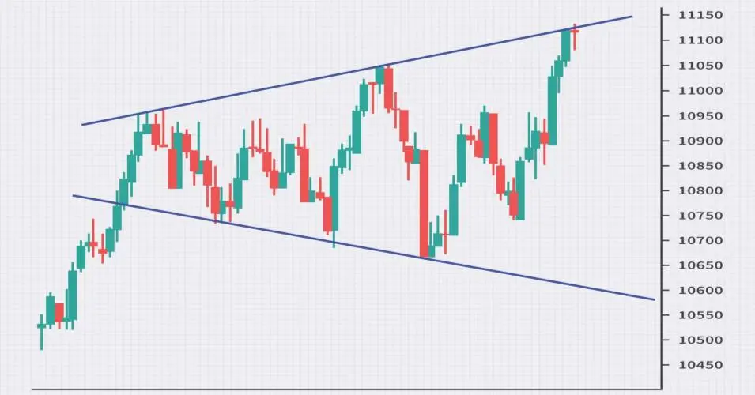

A broadening triangle pattern, also known as an expanding triangle or megaphone formation,
is a technical chart pattern characterized by increasing volatility and uncertainty in a
security's price. It signals a potential breakout in either direction, making it a
significant indicator for traders to watch.
Here's a breakdown of the key characteristics of a broadening triangle:
- Diverging trendlines: Unlike other triangle patterns
where the trendlines converge, the two trendlines in a broadening triangle diverge. One
connects the higher highs, while the other connects the lower lows. This creates a visual
effect of a widening megaphone or funnel.
- Increasing volatility:
As the price swings between the diverging trendlines,
the price movements become increasingly volatile. This signifies growing indecision
among market participants, with buyers pushing for higher prices
and sellers pushing for lower prices.
- Breakout: The eventual breakout occurs when the price decisively
breaks either above the upper trendline or below the lower trendline.
A strong volume confirmation usually accompanies the breakout to signal its validity.

Here are some additional points to remember about broadening triangles:
- While the direction of the breakout is uncertain, the prevailing trend before the pattern
formation can offer some clues. A breakout above the upper trendline tends to be
more likely within an uptrend, while a breakout below the lower trendline
is more likely within a downtrend.
- False breakouts are common within broadening triangles due to the high volatility.
These occur when the price briefly breaks through one of the trendlines but then
quickly reverses back within the pattern.
- The wider the broadening triangle, the more significant the eventual breakout
is likely to be. This is because wider patterns indicate even greater indecision
and pent-up energy waiting to be released.
Live Chart Example:
